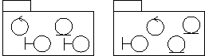
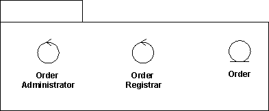
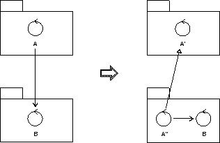
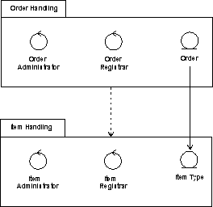

| Рекомендация: Проектирование пакета |
 |
|
| Связанные элементы |
|---|
ВведениеДля упрощения модели проектирования ее можно разбить на блоки. Сгруппировав элементы Модели проектирования по пакетам и подсистемам и затем указав, как они связаны друг с другом, вы сделаете общую структуру модели проще для понимания. Учтите, что подсистема проектирования моделируется как компонент, реализующий один или несколько интерфейсов; дополнительная информация приведена в разделах Рабочий продукт: подсистема проектирования и Рекомендация по рабочему продукту: подсистема проектирования. Пакеты проектирования, напротив, предназначены исключительно для группировки. Область видимости содержимого пакетаКласс, содержащийся в пакете, может быть общедоступным или частным. Общедоступный класс можно связать с любым другим классом. Частный класс можно связать только с классами, содержащимися в пакете. Интерфейс пакета состоит из общедоступных классов пакета. Интерфейс пакета (общедоступные классы) изолирует и реализует зависимости от других пакетов. Это позволяет упростить параллельную разработку, поскольку вы можете сравнительно рано установить интерфейсы, а разработчикам достаточно знать только об изменениях в интерфейсах других пакетов. Критерии разбиения пакетов на разделыСуществуют различные причины для разбиения Модели проектирования на разделы:
Упаковка пограничных классовКогда пограничные классы распределяются по пакетам, существуют две стратегии, которые применимы в этом случае; какую из них выбрать, зависит от того, предполагается ли вносить значительные изменения в системные интерфейсы в будущем.
Если главная цель - упростить внесение изменений в интерфейс, то пограничные классы следует поместить в один (или несколько) отдельных пакетов.
 Для того чтобы упростить изменение системных служб, пограничные классы упаковываются вместе с классами, с которыми они функционально связаны. Обязательные пограничные классы, не связанные функционально ни с какими сущностными и управляющими классами, следует поместить в отдельные пакеты, вместе с другими пограничными классами из того же интерфейса. Если пограничный класс связан с необязательной службой, разместите его вместе с остальными классами, обеспечивающими работу этой службы, в отдельной подсистеме. Подсистема будет отображена в необязательный компонент, который будет предоставляться в случае заказа этой необязательной функциональности. Упаковка функционально связанных классовДля каждой группы функционально связанных классов необходим отдельный пакет. Существует несколько практических критериев, позволяющих определить, связаны ли функционально два класса. Они перечислены ниже, в порядке убывания важности:

Следующие два критерия позволяют выяснить, когда два класса не следует помещать в один пакет:
Оценка уровня сцепленности пакетаПрежде всего, все элементы в пакете должны быть одинаковой степени обязательности: в обязательном пакете не должно быть необязательных элементов модели. Пример Одним из атрибутов обязательного сущностного класса Тип изделия является Порог пополнения запаса. Функция пополнения запаса, однако, необязательна в системе. По этой причине, класс Изделие следует разбить на два сущностных класса, и необязательный класс должен быть связан с обязательным. Пакет, считающийся обязательным, не может зависеть от необязательного пакета. Как правило, один пакет не может использоваться двумя различными субъектами. Причина в том, что изменение в поведении одного субъекта не должно влиять на другие субъекты. В этом правиле есть исключения, например, для пакетов, образующих необязательные службы. Пакеты этого типа не должны разбиваться, независимо от числа использующих их субъектов. Из сказанного следует, что вы должны разбить все пакеты и классы, используемые несколькими субъектами, за исключением необязательных пакетов. Все классы в одном пакете должны быть функционально связаны. Если вы следовали критериям из раздела "Найти пакеты из функционально связанных классов", то классы в одном пакете будут функционально связаны друг с другом. Однако конкретный класс может содержать "слишком много" поведения, либо взаимосвязи, не принадлежащие ему. В этом случае часть класса следует удалить, превратив ее в новый класс или перенеся ее в другой класс, возможно из другого пакета. Пример Поведение управляющего класса A из одного пакета не должно слишком сильно зависеть от класса B из другого пакета. Для того чтобы изолировать поведение, обусловленное классом B, необходимо разбить управляющий класс A на два управляющих класса - A' и A". Поведение, обусловленное классом B, помещается в новый управляющий класс A", который заносится в тот же пакет, что и класс B. Новый класс A" также получает взаимосвязь, например обобщение, с исходным объектом A'.  Для того чтобы изолировать поведение, обусловленное классом B, неоднородный управляющий класс A разбивается на два управляющих класса - A' и A". Описание зависимостей пакетовЕсли у класса в одном пакете есть ассоциация с классом в другом пакете, то эти пакеты зависят друг от друга. Зависимости пакетов моделируются с помощью взаимосвязи зависимости между пакетами. Взаимосвязи зависимости помогают оценить последовательность изменений: пакет, от которого зависит много пакетов, труднее изменить, чем пакет, от которого не зависит ни один пакет. Так как во время спецификации пакетов будут обнаружены несколько зависимостей, подобных описанным, эти взаимосвязи будут вынуждены изменяться во время работы. Описание взаимосвязи зависимости может содержать информацию о взаимосвязях классов, послуживших причиной появления зависимости. Поскольку при этом появляется информация, которую трудно обслуживать, это следует делать, только если эта информация ценная и имеет отношение к делу. Пример В Системе управления складом есть взаимосвязь зависимости, ведущая от пакета Обработка заказов к пакету Обработка предметов. Эта ассоциация появляется, поскольку у сущностного класса Заказ в Обработке заказов есть ассоциация с сущностным классом Тип предмета в другом пакете.  Пакет Обработка заказов зависит от пакета Обработка предметов, поскольку между двумя классами из этих пакетов существует ассоциация. Оценка связывания пакетовСвязывание пакетов - это и хорошо, и плохо: хорошо, поскольку связывание представляет повторное использование, а плохо - поскольку связывание представляет зависимости, усложняющие эволюцию системы. Ниже перечислены некоторые общие принципы:
|

© Copyright IBM Corp. 1987, 2006. Все права защищены.. |